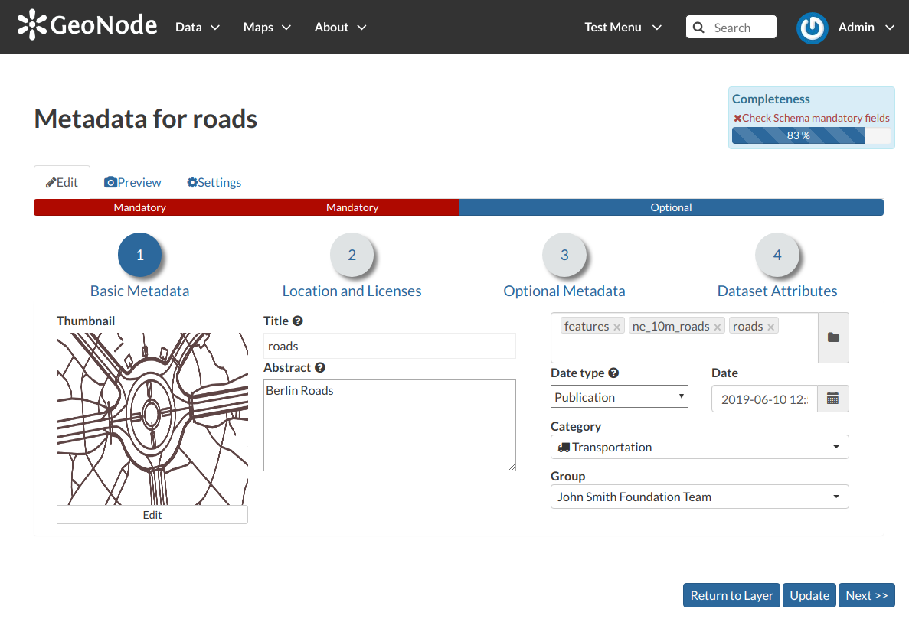
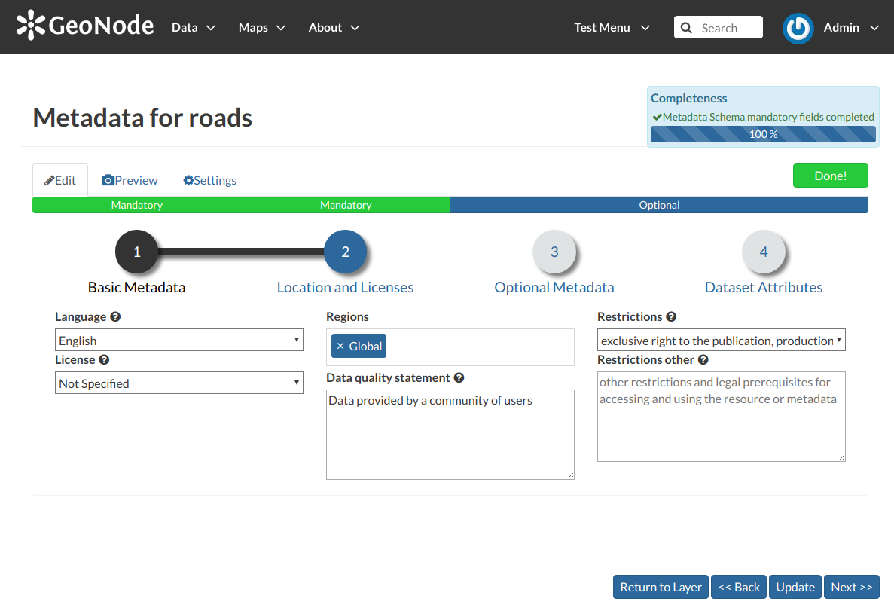
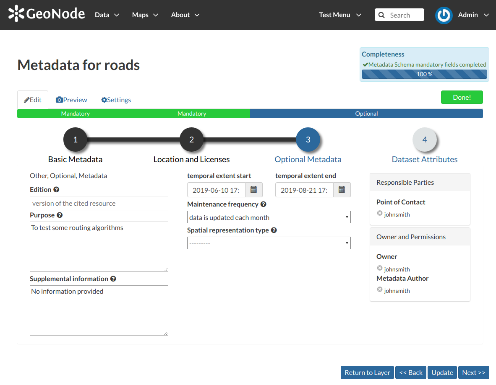
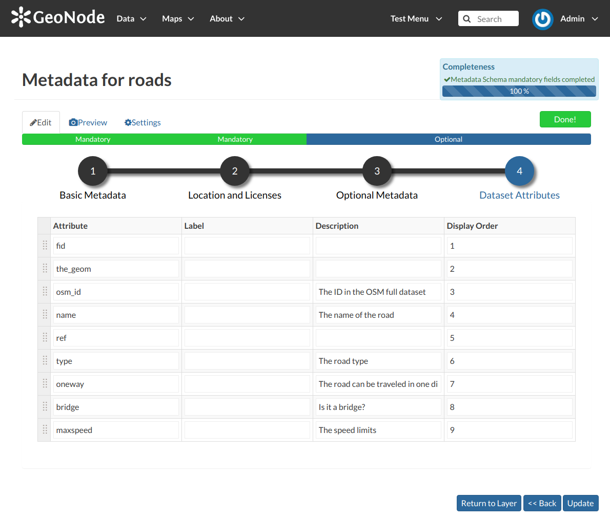

Layers Metadata¶
In GAIR special importance is given to Metadata and their standard formats. You can explore the Metadata of a Layer by clicking the Metadata Detail button in the the left side of Layer page.
The Layer Metadata Detail button
The Layer Metadata page will be displayed.
The Layer Metadata Details
In that page you can see the whole set of available metadata about the layer. Metadata are grouped in order to show the following types of information:
- Identification to uniquely identify the layer (Title, Abstract, Publication Date etc.);
- Owner, the user who owns the layer;
- Information, the Identification Image, the Spatial Extent, Projection System and so on;
- Features, Language, Supplemental and other Information;
- Contact Points, the available user to get in contact;
- References, various links to the resource information and data;
- Metadata Author, information about the author of the metadata.
Downloading Metadata¶
The Download Metadata button of the Layer Page allows you to download the layer metadata in various formats.
How to Download Metadata
The available download formats are grouped in three categories:
- Full metadata
- Standard Metadata - XML format
- Attribute Information
Click on the format name that you prefer to start the download.
Metadata Wizard¶
Warning
Remember you can edit only the data of which you are the owner or assigned to your group staff, according the layer permissions.
Basic Metadata
The first two steps are mandatory (no layers will be published if the required information are not provided) whereas the last two are optional.
In the first step the system asks you to insert the following metadata:
- The Thumbnail of the layer (click Edit to change it);
- The Title of the layer, which should be clear and understandable;
- An Abstract on the layer;
- The Creation/Publication/Revision Dates which define the time period that is covered by the layer;
- The Keywords, which should be chosen within the available list. The contributor search for available keywords by clicking on the searching bar, or on the folder logo representing, or by entering the first letters of the desired word;
- The Category which the layer belongs to;
- The Group which the layer is linked to.
Location and Licenses
Location and Licenses Metadata for Layers
The following list shows what kinds of metadata you are required to enter (see also the picture below):
- The Language of the layer;
- The License of the dataset;
- The Regions, which informs on the spatial extent covered by the layer. Proposed extents cover the following scales: global, continental, regional, national;
- The Data Quality statement (general explanation of the data producer’s knowledge about the lineage of a dataset);
- Potential Restrictions on layer sharing.
Optional Metadata
Optional Layer Metadata
Complementary information are:
- The Edition to indicate the reference or the source of the layer;
- The Purpose of the layer and its objectives;
- Any Supplemental information that can provide a better understanding of the uploaded layer;
- The Maintenance frequency of the layer;
- The users who are Responsible for the layer, its Owner, and the Author of its metadata;
- The Spatial representation type used.
Dataset Attributes
Dataset Attributes Metadata for Layers
At this step you can enrich the dataset attributes with useful information like the following:
- The Label displayed
- A detailed Description
- The Display Order
Use next >> or << back to navigate through those steps. Once you have finished click on Update.
Some metadata are mandatory, if you miss any of that metadata the Completeness bar shows you a red message like the one in the picture below.

Completeness Progress Bar
Metadata Advanced Editing¶
In the Layer Editing panel the Advanced Edit is also available.
The Advanced Edit button
Click on it to display the Metadata Advanced Editing Page. That page allows you to edit all the layer metadata described in the previous paragraph. Once you have finished to edit them click on Update to save your changes.
Uploading Metadata¶
Users may also upload a metadata XML document (in ISO, FGDC, or Dublin Core format) to fill in key GeoNode metadata elements automatically. The picture below shows you how the page looks like.
The Metadata Advanced Editing page
Click on Choose Files to select the document from your disk, then click on Upload files to trigger the uploading process.